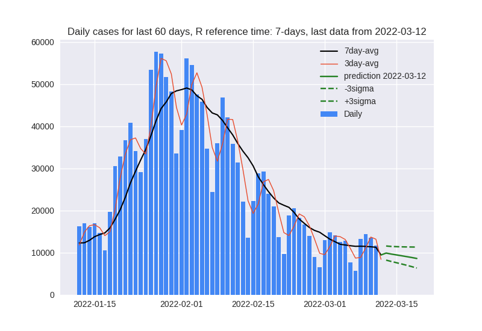

<H1>Covid-19 Poland</H1>

<a href="components/project_overview.pdf">Project description</a>

<ul>
    <li>
        Infected:
        <ul>
            <li><a href="components/pol_fresh.html">Fresh data</a></li>
            <li><a href="components/pol_new.html">New</a></li>
            <li><a href="components/pol_infected.html">Total</a></li>
            <li><a href="components/pol_pred_3.html">3-day R reference time prediction</a></li>
        </ul>
    </li>
    <li>
        Deaths:
        <ul>
            <li><a href="components/pol_fresh_deaths.html">Fresh data</a></li>
            <li><a href="components/pol_new_deaths.html">New</a></li>
            <li><a href="components/pol_dead.html">Total</a></li>
        </ul>
    </li>

    <li>
        Current situation compared to old predictions:
        <ul>
            <li><a href="components/pol_old_pred_7day.html">7-day R reference time</a></li>
            <li><a href="components/pol_old_pred_3day.html">3-day R reference time</a></li>
        </ul>
    </li>

    <li>
        Other useful plots:
        <ul>
            <li><a href="components/r_over_time.png">R_eff over time</a></li>
            <li><a href="components/hosp_based_pred_fresh.html">Predictions based on hospitalizations</a></li>
            <li><a href="components/hosp_based_history.html">Historical data based on hospitalizations</a></li>
            <li><a href="tests.html">Tests related plots</a></li>
            <li><a href="sanitary.html">Sanitary data plots</a></li>
        </ul>
    </li>

    <li>
        Regions:
        <ul>
            <li><a href="components/regions_fresh.png">Fresh data</a></li>
            <li><a href="components/regions_norm.png">Normalized</a></li>
            <li><a href="components/regions.png">UnNormalized</a></li>
        </ul>
    </li>
    <li>
        Maps:
        <ul>
            <li><a href="components/reg_map.html">Local trend</a></li>
        </ul>
    </li>
    <li>
        Data in tables:
        <ul>
            <li><a href="components/basic_parameters.html">Basic parameters</a></li>
            <li><a href="components/modeling_parameters.html">Modeling parameters</a></li>
            <li>Country data:
                <a href="data/country_data.html">html</a>
                <a href="data/country_data.csv">csv</a>
            </li>
            <li>Region data:
                <a href="data/regions_data.html">html</a>
                <a href="data/regions_data.csv">csv</a>
            </li>
            <li>Tests and sanitary date:
                <a href="data/sanitary_data.html">html</a>
                <a href="data/sanitary_data.csv">csv</a>
            </li>
        </ul>
    </li>

</ul>

<p>
    <a href="components/data_source.txt">Data source</a>
